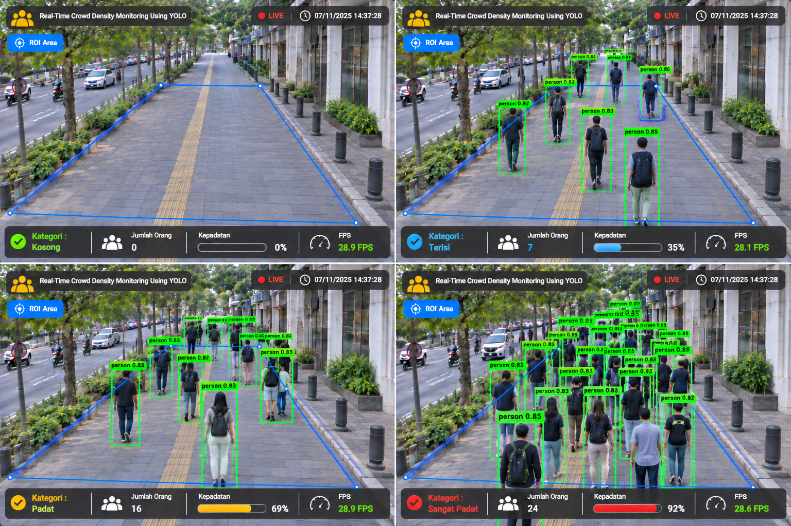

Real-Time Crowd Density Monitoring Using YOLO adalah sistem monitoring berbasis Computer Vision yang dikembangkan untuk menganalisis tingkat kepadatan manusia pada suatu area publik melalui rekaman video maupun kamera pengawas. Sistem ini memanfaatkan algoritma YOLO (You Only Look Once) sebagai metode deteksi objek untuk mengidentifikasi keberadaan manusia secara cepat dan akurat pada setiap frame video. Dalam proses pengolahannya, OpenCV digunakan untuk pemrosesan citra dan video digital, sedangkan CvZone dimanfaatkan untuk mempermudah visualisasi hasil deteksi seperti bounding box, label objek, dan informasi jumlah individu yang terdeteksi. Sistem mampu melakukan perhitungan jumlah orang secara otomatis dan memberikan informasi kepadatan area berdasarkan hasil deteksi yang diperoleh secara real-time. Melalui penerapan teknologi Artificial Intelligence dan Deep Learning, sistem ini dapat membantu proses pemantauan keramaian secara lebih efektif dibandingkan dengan metode observasi manual. Sistem dapat diterapkan pada berbagai lingkungan publik seperti kampus, pusat perbelanjaan, terminal, stasiun, ruang tunggu, maupun area layanan umum yang membutuhkan pemantauan jumlah pengunjung secara berkelanjutan.
... Lihat Selengkapnya